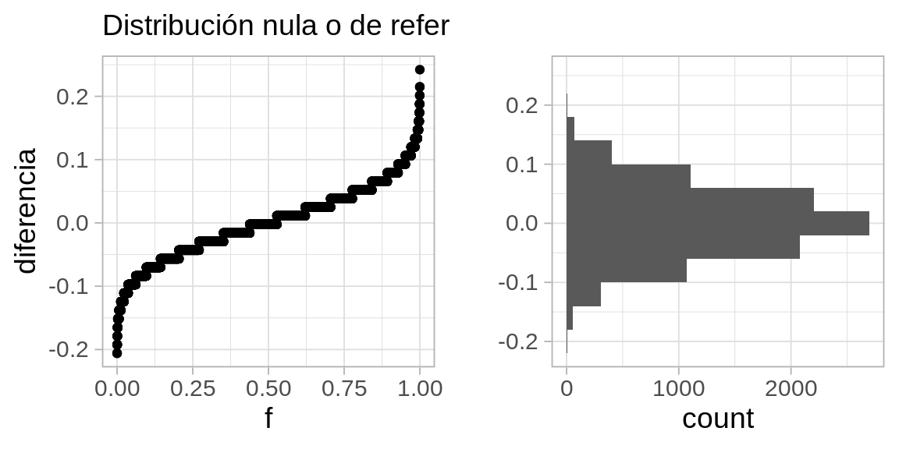
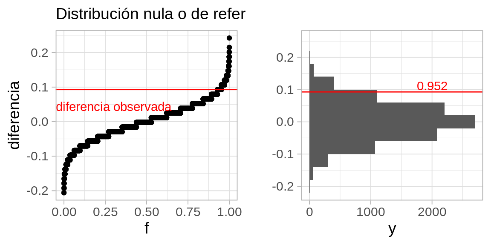
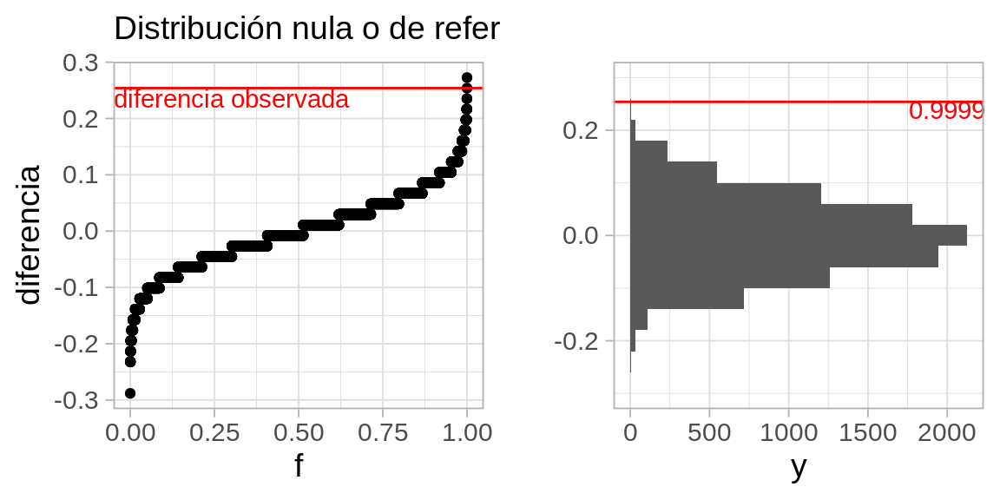
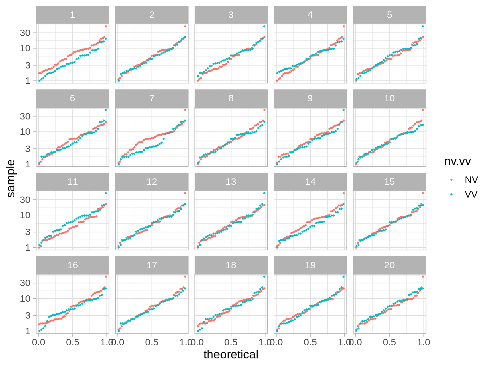
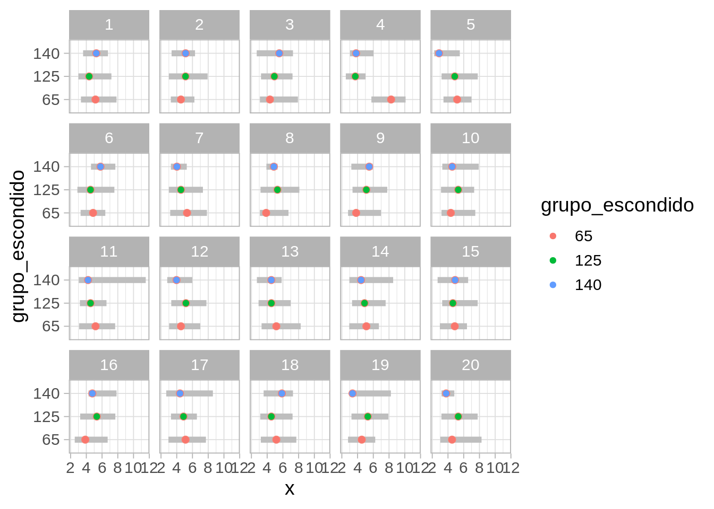
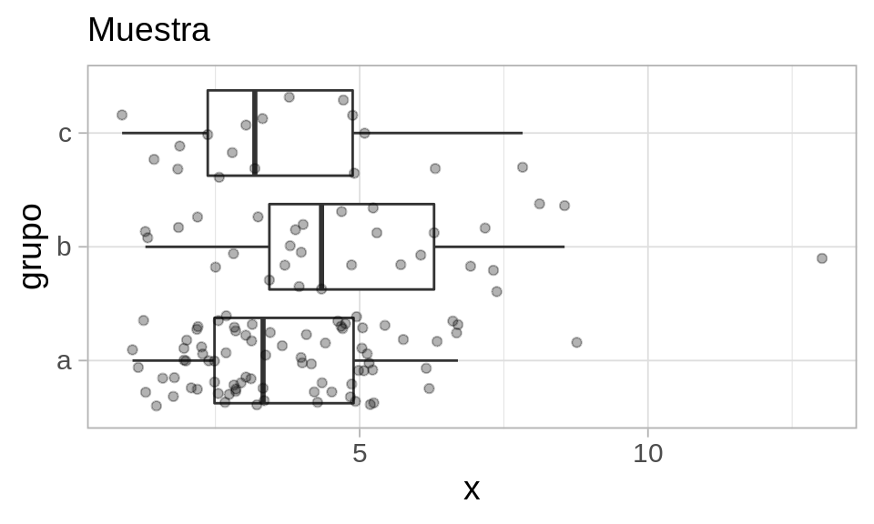
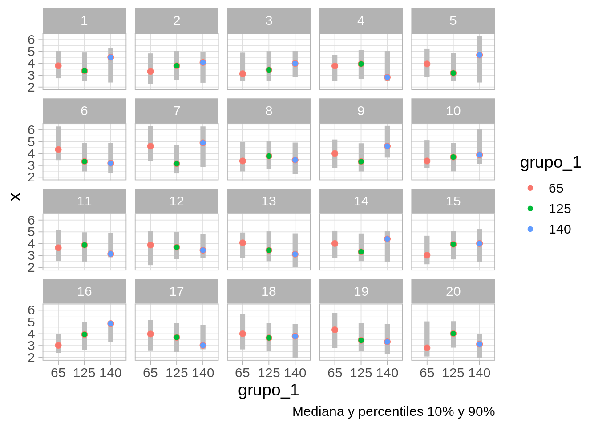
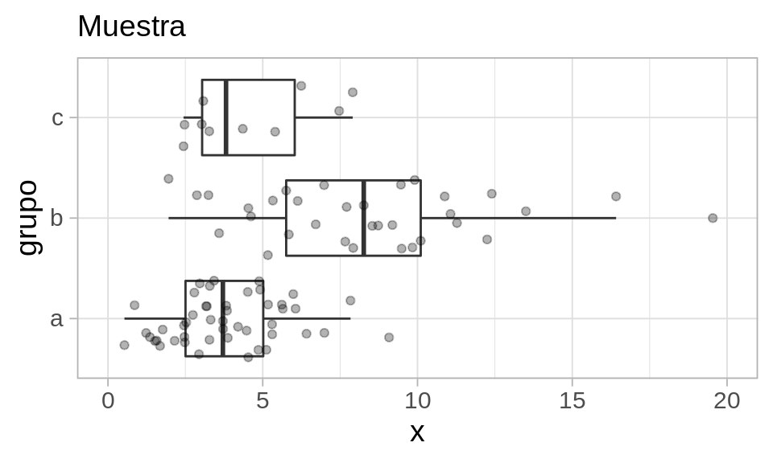

5 Más de pruebas de hipótesis
Prueba de permutaciones para proporciones
Veremos otro ejemplo donde podemos hacer más concreta la idea de distribución nula o de referencia usando pruebas de permutaciones. Supongamos que con nuestra muestra de tomadores de té, queremos probar la siguiente hipótesis nula:
- Los tomadores de té en bolsas exclusivamente usan azúcar más a tasas simillares que los tomadores de té suelto (que pueden o no también tomar té en bolsita).
Los datos que obtuvimos en nuestra encuesta, en conteos, son:
Código
te_azucar <- tea |> select(how, sugar) |>
mutate(how = ifelse(how == "tea bag", "bolsa_exclusivo", "suelto o bolsa"))
te_azucar |> group_by(how, sugar) |> tally() |>
spread(how, n) |>
formatear_tabla()| sugar | bolsa_exclusivo | suelto o bolsa |
|---|---|---|
| No.sugar | 81 | 74 |
| sugar | 89 | 56 |
Y en proporciones tenemos que:
| how | prop_azucar | n |
|---|---|---|
| bolsa_exclusivo | 0.52 | 170 |
| suelto o bolsa | 0.43 | 130 |
Pero distintas muestras podrían haber dado distintos resultados. Nos preguntamos que tan fuerte es la evidencia en contra de que en realidad los dos grupos de personas usan azúcar en proporciones similares, y la diferencia que vemos se puede atribuir a variación muestral.
En este ejemplo, podemos usar una estádistica de prueba numérica, por ejemplo, la diferencia entre las dos proporciones:
\[p_1 - p_2\].
(tomadores de en bolsa solamente vs. suelto y bolsa). El proceso sería entonces:
- La hipótesis nula es que los dos grupos tienen distribuciones iguales, que este caso quiere decir que en la población, tomadores de té solo en bolsa usan azúcar a las mismas tasas que tomadores de suelto o bolsas.
- Bajo nuestra hipótesis nula (proporciones iguales), producimos una cantidad grande (por ejemplo 10 mil o más) de muestras permutando las etiquetas de los grupos.
- Evaluamos nuestra estadística de prueba en cada una de las muestras permutadas.
- El conjunto de valores obtenidos nos da nuestra distribución de referencia (ya no estamos limitados a 20 replicaciones como en las pruebas gráficas).
- Y la pregunta clave es: ¿el valor de la estadística en nuestra muestra es extrema en comparación a la distribución de referencia?
Código
# ESta función calcula la diferencia entre grupos de interés
calc_diferencia <- function(datos){
datos |>
mutate(usa_azucar = as.numeric(sugar == "sugar")) |>
group_by(how) |>
summarise(prop_azucar = mean(usa_azucar)) |>
spread(how, prop_azucar) |>
mutate(diferencia_prop = bolsa_exclusivo - `suelto o bolsa`) |> pull(diferencia_prop)
}
# esta función hace permutaciones y calcula la diferencia para cada una
permutaciones_est <- function(datos, variable, calc_diferencia, n = 1000){
# calcular estadística para cada grupo
permutar <- function(variable){
sample(variable, length(variable))
}
tbl_perms <- tibble(.sample = seq(1, n-1, 1)) |>
mutate(diferencia = map_dbl(.sample,
~ datos |> mutate({{variable}}:= permutar({{variable}})) |> calc_diferencia()))
bind_rows(tbl_perms, tibble(.sample = n, diferencia = calc_diferencia(datos)))
}La diferencia observada es:
Código
dif_obs <- calc_diferencia(te_azucar)
dif_obs |> round(3)[1] 0.093Ahora construimos nuestra distribución nula o de referencia:
Código
valores_ref <- permutaciones_est(te_azucar, how, calc_diferencia, n = 10000)Y graficamos nuestros resultados (con un histograma y una gráfica de cuantiles, por ejemplo). la estadística evaluada un cada una de nuestras muestras permutadas:
Código
g_1 <- ggplot(valores_ref, aes(sample = diferencia)) + geom_qq(distribution = stats::qunif) +
xlab("f") + ylab("diferencia") + labs(subtitle = "Distribución nula o de referencia")
g_2 <- ggplot(valores_ref, aes(x = diferencia)) + geom_histogram(binwidth = 0.04) +
coord_flip() + xlab("") + labs(subtitle = " ")
gridExtra::grid.arrange(g_1, g_2, ncol = 2) 
Este es el rango de fluctuación usual para nuestra estadística *bajo la hipótesis de que los dos grupos de tomadores de té consumen té a la misma tasa.
El valor que obtuvimos en nuestros datos es 0.0927602, que no es un valor extremo en la distribución de referencia que vimos arriba: esta muestra no aporta mucha evidencia en contra de que los grupos tienen distribuciones similares.
Podemos graficar otra vez marcando el valor de referencia:
Código
# Función de distribución acumulada (inverso de función de cuantiles)
dist_perm <- ecdf(valores_ref$diferencia)
# Calculamos el percentil del valor observado
percentil_obs <- dist_perm(dif_obs)Código
g_1 <- ggplot(valores_ref, aes(sample = diferencia)) + geom_qq(distribution = stats::qunif) +
xlab("f") + ylab("diferencia") + labs(subtitle = "Distribución nula o de referencia") +
geom_hline(yintercept = dif_obs, colour = "red") +
annotate("text", x = 0.3, y = dif_obs - 0.05, label = "diferencia observada", colour = "red")
g_2 <- ggplot(valores_ref, aes(x = diferencia)) + geom_histogram(binwidth = 0.04) +
coord_flip() + xlab("") + labs(subtitle = " ") +
geom_vline(xintercept = dif_obs, colour = "red") +
annotate("text", x = dif_obs, y = 2000, label = percentil_obs,vjust = -0.2, colour = "red")
gridExtra::grid.arrange(g_1, g_2, ncol = 2) 
Y vemos que es un valor algo (pero no muy) extremo en la distribución de referencia que vimos arriba: esta muestra no aporta una gran cantidad de evidencia en contra de que los grupos tienen distribuciones similares, que en este caso significa que los dos grupos usan azúcar a tasas similares.
Valor p
Nótese que calculamos una cantidad adicional, que es el percentil donde nuestra observación cae en la distribución generada por las permutación. Esta cantidad puede usarse para calcular un valor p. Podemos calcular, por ejemplo:
- Valor p de dos colas: Si la hipótesis nula es cierta, ¿cuál es la probabilidad de observar una diferencia tan extrema o más extrema de lo que observamos?
Considerando en este caso interpretamos extrema como que cae lejos de donde a mayoría de la distribución se concentra, podemos calcular el valor p como sigue. A partir de el valor observado, consideramos cuál dato es menor: la probabilidad bajo lo hipótesis nula de observar una diferencia mayor de a que observamos, o la probabilidad de observar una diferencia menor a la que observamos. Tomamos el mínimo y multiplicamos por dos (Hesterberg (2015)):
Código
2 * min(dist_perm(dif_obs), (1 - dist_perm(dif_obs)))[1] 0.0826Este valor p se considera como evidencia “moderada” en contra de la hipótesis nula. Valores p más chicos (observaciones más extremas en comparación con la referencia) aportan más evidencia en contra de la hipótesis de que los grupos de tomadores de té , y valores más grandes aportan menos evidencia.
Tomadores de té 2
Ahora hacemos una prueba de permutaciones otro par de proporciones con el mismo método. La hipótesis nula ahora es:
- Los tomadores de té Earl Gray usan azúcar a una tasa similar a los tomadores de té negro
Los datos que obtuvimos en nuestra encuesta, en conteos, son: ::: {.cell} ::: {.cell-output-display}
| sugar | black | Earl Grey |
|---|---|---|
| No.sugar | 51 | 84 |
| sugar | 23 | 109 |
::: :::
Y en porcentajes tenemos que:
Código
prop_azucar <- te_azucar |> group_by(Tea, sugar) |> tally() |>
group_by(Tea) |> mutate(prop = 100 * n / sum(n), n = sum(n)) |>
filter(sugar == "sugar") |> select(Tea, prop_azucar = prop, n) |>
mutate('% usa azúcar' = round(prop_azucar)) |> select(-prop_azucar)
prop_azucar |> formatear_tabla()| Tea | n | % usa azúcar |
|---|---|---|
| black | 74 | 31 |
| Earl Grey | 193 | 56 |
Pero distintas muestras podrían haber dado distintos resultados. Nos preguntamos que tan fuerte es la evidencia en contra de que en realidad los dos grupos de personas usan azúcar en proporciones similares, y la diferencia que vemos se puede atribuir a variación muestral.
Escribimos la función que calcula diferencias para cada muestra:
Código
calc_diferencia_2 <- function(datos){
datos |>
mutate(usa_azucar = as.numeric(sugar == "sugar")) |>
group_by(Tea) |>
summarise(prop_azucar = mean(usa_azucar)) |>
spread(Tea, prop_azucar) |>
mutate(diferencia_prop = `Earl Grey` - black) |> pull(diferencia_prop)
}La diferencia observada es:
[1] 0.254Ahora construimos nuestra distribución nula o de referencia:
Código
set.seed(2)
valores_ref <- permutaciones_est(te_azucar, Tea, calc_diferencia_2, n = 10000)Y podemos graficar la distribución de referencia otra vez marcando el valor observado

En este caso, la evidencia es muy fuerte en contra de la hipótesis nula, pues el resultado que obtuvimos es muy extremo en relación a la distribución de referencia. El valor p es cercano a 0.
Ejemplo: tiempos de fusión
Consideremos el ejemplo de fusión de estereogramas que vimos anteriormente. Una pregunta que podríamos hacer es: considerando que hay mucha variación en el tiempo de fusión dentro de cada tratamiento, necesitamos calificar la evidencia de nuestra conclusión (el tiempo de fusión se reduce con información verbal).
Podemos usar una prueba de permutaciones, esta vez justificándola por el hecho de que los tratamientos se asignan al azar: si los tratamientos son indistinguibles, entonces las etiquetas de los grupos son solo etiquetas, y permutarlas daría muestras igualmente verosímiles.
En este caso, compararemos gráficas de cuantiles de los datos con los producidos por permutaciones:
── Column specification ────────────────────────────────────────────────────────
cols(
n = col_double(),
time = col_double(),
nv.vv = col_character()
)decrypt("ZVEP Smam qh t1xqaq1h zz")
Ejercicio: ¿Podemos identificar los datos? En general, muy frecuentemente las personas identifican los datos correctamente, lo que muestra evidencia considerable de que la instrucción verbal altera los tiempos de respuesta de los partipantes, y en este caso ayuda a reducir el tiempo de fusión de los estereogramas.
Ejemplo: tiempos de fusión 2
Podemos usar las pruebas de permutaciones para distintos de tipos de estadísticas: medianas, medias, comparar dispersión usando rangos intercuartiles o varianzas, etc.
Regresamos a los tiempos de fusión. Podemos hacer una prueba de permutaciones para la diferencia de las medias o medianas, por ejemplo. En este ejemplo usaremos una medida de centralidad un poco diferente, como ilustración: el promedio de los cuartiles superior e inferior de las dos distribuciones. Usaremos el cociente de estas dos cantidades para medir su diferencia
Código
stat_fusion <- function(x){
(quantile(x, 0.75) + quantile(x, 0.25))/2
}
calc_fusion <- function(stat_fusion){
fun <- function(datos){
datos |>
group_by(nv.vv) |>
summarise(est = stat_fusion(time)) |>
spread(nv.vv, est) |> mutate(dif = VV / NV ) |> pull(dif)
}
fun
}Código
calc_cociente <- calc_fusion(stat_fusion)
dif_obs <- calc_cociente(fusion)
# permutar
valores_ref <- permutaciones_est(fusion, nv.vv, calc_cociente, n = 10000)
dist_perm_nv <- ecdf(valores_ref$diferencia)
cuantil_obs <- dist_perm_nv(dif_obs)
Y el valor p de dos colas es
Código
dist_perm_nv <- ecdf(valores_ref$diferencia)
2 * min(dist_perm_nv(dif_obs), 1- dist_perm_nv(dif_obs))[1] 0.0354Lo que muestra evidencia considerable, aunque no muy fuerte, de que la instrucción verbal ayuda a reducir el tiempo de fusión de los estereogramas: la caja del diagrama de caja y brazos para el grupo VV está encogida por un factor menor a 1.
Ojo: otros tipos de hipótesis nulas
La pruebas de permutaciones son más útiles cuando nuestra hipótesis nula se refiere que la distribución de los grupos son muy similares, o la independencia entre observaciones y grupo. Esto también aplica cuando queremos probar por ejemplo, que una variable numérica Y es independiente de X.
Hay algunas hipótesis que no se pueden probar con este método, como por ejemplo, las que se refieren a una sola muestra: ¿los datos son consistentes con que su media es igual a 5?
Adicionalmente, en algunas ocasiones queremos probar aspectos más específicos de las diferencias: como ¿son iguales las medias o medianas de dos grupos de datos? ¿Tienen dispersión similar?
Las pruebas de permutaciones no están tan perfectamente adaptadas a este problema, pues prueban todos los aspectos de las distribuciones que se comparan, aún cuando escogamos una estadística particular que pretende medir, por ejemplo, diferencia de medias. Eso quiere decir que podemos rechazar igualdad de medias, por ejemplo, cuando en realidad otra característica de las distribuciones es la que difiere mucho en las poblaciones
En algunas referencias (ver (chitim?), Efron y Tibshirani (1993)) se argumenta que de todas formas las pruebas de permutaciones son relativamente robustas a esta desadaptación. Un caso excepcional, por ejemplo, es cuando las poblaciones que comparamos resultan tener dispersión extremadamente distinta, y adicionalmente los tamaños de muestra de los grupos son muy desiguales (otra vez, ver ejemplos en (chitim?)).
Comparando distribuciones
Ahora intentamos un ejemplo más típico.
Supongamos tenemos muestras para tres grupos a, b y c, que quiere decir que dentro de cada grupo, el proceso e selección de los elementos se hace de manera al azar y de manera simétrica (por ejemplo cada elemento tiene a misma probabiidad de ser seleccionado, y las extracciones se hacen de manera independiente.)
Queremos comparar las distribuciones de los datos obtenidos para cada grupo. Quizá la pregunta detrás de esta comparación es: el grupo de clientes b recibió una promoción especial. ¿Están gastando más? La medición que comparamos es el gasto de los clientes.

En la muestra observamos diferencias entre los grupos. Pero notamos adicionalmente que hay mucha variación dentro de cada grupo. Nos podríamos preguntar entonces si las diferencias que observamos se deben variación muestral, por ejemplo.
Podemos construir ahora una hipótesis nula, que establece que las observaciones provienen de una población similar:
- Las tres poblaciones (a, b, c) son prácticamente indistiguibles. En este caso, la variación que observamos se debería a que tenemos información incompleta.
Como en el ejemplo anterior necesitamos construir o obtener una distribución de referencia para comparar qué tan extremos o diferentes son los datos que observamos. Esa distribución de referencia debería estar basada en el supuesto de que los grupos producen datos de distribuciones similares.
Si tuvieramos mediciones similares históricas de estos tres grupos, quizá podríamos extraer datos de referencia y comparar, como hicimos en el ejempo anterior. Pero esto es menos común en este tipo de ejemplos.
Permutaciones y el lineup
Para abordar este problema podemos pensar en usar permutaciones de los grupos de la siguiente forma (Box et al. (1978), Hesterberg (2015)):
- Si los grupos producen datos bajo procesos idénticos, entonces los grupos a, b, c solo son etiquetas que no contienen información.
- Podríamos permutar al azar las etiquetas y observar nuevamente la gráfica de caja y brazos por grupos.
- Si la hipótesis nula es cierta (grupos idénticos), esta es una muestra tan verosímil como la que obtuvimos.
- Así que podemos construir datos de referencia permutando las etiquetas de los grupos al azar, y observando la variación que ocurre.
- Si la hipótesis nula es cercana a ser cierta, no deberíamos de poder distinguir fácilmente los datos observados de los producidos con las permutaciones al azar.
Vamos a intentar esto, por ejemplo usando una gráfica de cuantiles simplificada. Hacemos un lineup, o una rueda de sospechosos (usamos el paquete H. Wickham, Chowdhury, y Cook (2012), ver Hadley Wickham et al. (2010)), donde 19 de los acusados son generados mediante permutaciones al azar de la variable del grupo, y el culpable (los verdaderos datos) están en una posición escogida al azar. ¿Podemos identificar los datos verdaderos? Para evitar sesgarnos, también ocultamos la etiqueta verdadera
Usamos una gráfica que muestra los cuantes 0.10, 0.50, 0.90:
Código
set.seed(88)
reps <- lineup(null_permute("grupo"), muestra_tab, n = 20)decrypt("ZVEP Smam qh t1xqaq1h zD")Código
reps_mezcla <- reps |> mutate(grupo_1 = factor(digest::digest2int(grupo) %% 177))
grafica_cuantiles(reps_mezcla, grupo_1, x) +
facet_wrap(~.sample, ncol = 5) + ylab("x") +
labs(caption = "Mediana y percentiles 10% y 90%")+ geom_point(aes(colour = grupo_1))`summarise()` has grouped output by 'grupo_1'. You can override using the
`.groups` argument.
Y la pregunta que hacemos es podemos distinguir nuestra muestra entre todas las replicaciones producidas con permutaciones?
Ejercicio: ¿dónde están los datos observados? Según tu elección, ¿qué tan diferentes son los datos observados de los datos nulos?
En este ejemplo, es difícil indicar cuáles son los datos. Los grupos tienen distribuciones similares y es factible que las diferencias que observamos se deban a variación muestral.
Si la persona escoge los verdaderos datos, encontramos evidencia en contra de la hipótesis nula (los tres grupos son equivalentes). En algunos contextos, se dice que los datos son significativamente diferentes al nivel 0.05. Esto es evidencia en contra de que los datos se producen de manera homogénea, independientemente del grupo.
Si la persona escoge uno de los datos permutados, no encontramos evidencia en contra de que los tres grupos producen datos con distribuciones similares.
Comparaciones con lineup 2
Repitimos el ejemplo para otra muestra (en este ejemplo el proceso generador de datos es diferente para el grupo b):

Hacemos primero la prueba del lineup:
Código
set.seed(121)
reps <- lineup(null_permute("grupo"), muestra_tab, n = 20)decrypt("ZVEP Smam qh t1xqaq1h zo")Código
grafica_cuantiles(reps |> mutate(grupo_escondido = factor(digest::digest2int(grupo) %% 177)),
grupo_escondido, x) + facet_wrap(~.sample) + ylab("x") +
coord_flip() + geom_point(aes(colour = grupo_escondido))`summarise()` has grouped output by 'grupo_escondido'. You can override using
the `.groups` argument.Podemos distinguir más o menos claramente que está localizada en valores más altos y tiene mayor dispersión. En este caso, como en general podemos identificar los datos, obtenemos evidencia en contra de que los tres grupos tienen distribuciones iguales.
La “crisis de replicabilidad”
Recientemente (Ioannidis (2005)) se ha reconocido en campos de ciencias sociales y medicina la crisis de replicabilidad. Varios estudios que recibieron mucha publicidad inicialmente no han podido ser replicados posteriormente por otros investigadores. Por ejemplo:
- Hacer poses poderosas produce cambios fisiológicos que mejoran nuestro desempeño en ciertas tareas
- Mostrar palabras relacionadas con “viejo” hacen que las personas caminen más lento (efectos de priming)
En todos estos casos, el argumento de la evidencia de estos efectos fue respaldada por una prueba de hipótesis nula con un valor p menor a 0.05. La razón es que ese es el estándar de publicación seguido por varias áreas y revistas. La tasa de no replicabilidad parece ser mucho más alta (al menos la mitad o más según algunas fuentes, como la señalada arriba) que lo sugeriría la tasa de falsos positivos (menos de 5%)
Este problema de replicabilidad parece ser más frecuente cuando:
- Se trata de estudios de potencia baja: mediciones ruidosas y tamaños de muestra chicos.
- El plan de análisis no está claramente definido desde un principio (lo cual es difícil cuando se están investigando “fenómenos no estudiados antes”)
¿A qué se atribuye esta crisis de replicabilidad?
El jardín de los senderos que se bifurcan
Aunque haya algunos ejemplos de manipulaciones conscientes –e incluso, en menos casos, malintencionadas– para obtener resultados publicables o significativos (p-hacking), como vimos en ejemplos anteriores, hay varias decisiones, todas razonables, que podemos tomar cuando estamos buscando las comparaciones correctas. Algunas pueden ser:
- Transformar los datos (tomar o no logaritmos, u otra transformación)
- Editar datos atípicos (razonable si los equipos pueden fallar, o hay errores de captura, por ejemplo)
- Distintas maneras de interpretar los criterios de inclusión de un estudio (por ejemplo, algunos participantes mostraron tener gripa, o revelaron que durmieron muy poco la noche anterior, etc. ¿los dejamos o los quitamos?)
Dado un conjunto de datos, las justificaciones de las decisiones que se toman en cada paso son razonables, pero con datos distintos las decisiones podrían ser diferentes. Este es el jardín de los senderos que se bifurcan Gelman, que invalida en parte el uso valores p como criterio de evidencia contra la hipótesis nula.
Esto es exacerbado por:
- Tamaños de muestra chicos y efectos “inestables” que se quieren medir (por ejemplo en sicología)
- El hecho de que el criterio de publicación es obtener un valor p < 0.05, y la presión fuerte sobre los investigadores para producir resultados publicables (p < 0.05)
- El que estudios o resultados similares que no obtuvieron valores \(p\) por debajo del umbral no son publicados o reportados.
Ver por ejemplo el comunicado de la ASA.
Ojo: esas presiones de publicación no sólo ocurre para investigadores en sicología. Cuando trabajamos en problemas de análisis de datos en problemas que son de importancia, es común que existan intereses de algunas partes o personas involucradas por algunos resultados u otros (por ejemplo, nuestros clientes de consultoría o clientes internos). Eso puede dañar nuestro trabajo como analistas, y el avance de nuestro equipo. Aunque esas presiones son inevitables, se vuelven manejables cuando hay una relación de confianza entre las partes involucradas.
Ejemplo: decisiones de análisis y valores p
En el ejemplo de datos de fusión, decidimos probar, por ejemplo, el promedio de los cuartiles inferior y superior, lo cual no es una decisión típica pero usamos como ilustración. Ahora intentamos usar distintas mediciones de la diferencia entre los grupos, usando distintas medidas resumen y transformaciones (por ejemplo, con o sin logaritmo). Aquí hay unas 12 combinaciones distintas para hacer el análisis (multiplicadas por criterios de “aceptación de datos en la muestra”, que simulamos tomando una submuestra al azar):
Código
calc_fusion <- function(stat_fusion, trans, comparacion){
fun <- function(datos){
datos |>
group_by(nv.vv) |>
summarise(est = stat_fusion({{ trans }}(time))) |>
spread(nv.vv, est) |> mutate(dif = {{ comparacion }}) |> pull(dif)
}
fun
}
valor_p <- function(datos, variable, calc_diferencia, n = 1000){
# calcular estadística para cada grupo
permutar <- function(variable){
sample(variable, length(variable))
}
tbl_perms <- tibble(.sample = seq(1, n-1, 1)) |>
mutate(diferencia = map_dbl(.sample,
~ datos |> mutate({{variable}} := permutar({{variable}})) |> calc_diferencia()))
perms <- bind_rows(tbl_perms, tibble(.sample = n, diferencia = calc_diferencia(datos)))
perms_ecdf <- ecdf(perms$diferencia)
dif <- calc_diferencia(datos)
2 * min(perms_ecdf(dif), 1- perms_ecdf(dif))
}Código
set.seed(7272)
media_cuartiles <- function(x){
(quantile(x, 0.75) + quantile(x, 0.25))/2
}
# nota: usar n=10000 o más, esto solo es para demostración:
calc_dif <- calc_fusion(mean, identity, VV - NV)
valor_p(fusion |> sample_frac(0.95), nv.vv, calc_dif, n = 1000)[1] 0.072Código
calc_dif <- calc_fusion(mean, log, VV - NV)
valor_p(fusion |> sample_frac(0.95), nv.vv, calc_dif, n = 1000)[1] 0.024Código
calc_dif <- calc_fusion(median, identity, VV / NV)
valor_p(fusion |> sample_frac(0.95), nv.vv, calc_dif, n = 1000)[1] 0.016Código
calc_dif <- calc_fusion(media_cuartiles, identity, VV / NV)
valor_p(fusion |> sample_frac(0.95), nv.vv, calc_dif, n = 1000)[1] 0.026Si existen grados de libertad - muchas veces necesarios para hacer un análisis exitoso-, entonces los valores p pueden tener poco significado.
Alternativas o soluciones
El primer punto importante es reconocer que la mayor parte de nuestro trabajo es exploratorio (recordemos el proceso complicado del análisis de datos de refinamiento de preguntas). En este tipo de trabajo, reportar valores p puede tener poco sentido, y mucho menos tiene sentido aceptar algo “verdadero” cuando pasa un umbral de significancia dado.
Nuestro interés principal al hacer análisis es expresar correctamente y de manera útil la incertidumbre asociada a las conclusiones o patrones que mostramos (asociada a variación muestral, por ejemplo) para que el proceso de toma de decisiones sea informado. Un resumen de un número (valor p, o el que sea) no puede ser tomado como criterio para tomar una decisión que generalmente es compleja. En la siguiente sección veremos cómo podemos mostrar parte de esa incertidumbre de manera más útil.
Por otra parte, los estudios confirmatorios (donde se reportan valores p) también tienen un lugar. En áreas como la sicología, existen ahora movimientos fuertes en favor de la repetición de estudios prometedores pero donde hay sospecha de grados de libertad del investigador. Este movimiento sugiere dar valor a los estudios exploratorios que no reportan valor p, y posteriormente, si el estudio es de interés, puede intentarse una replicación confirmatoria, con potencia más alta y con planes de análisis predefinidos.